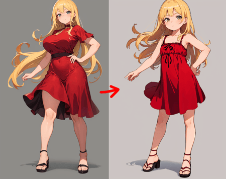
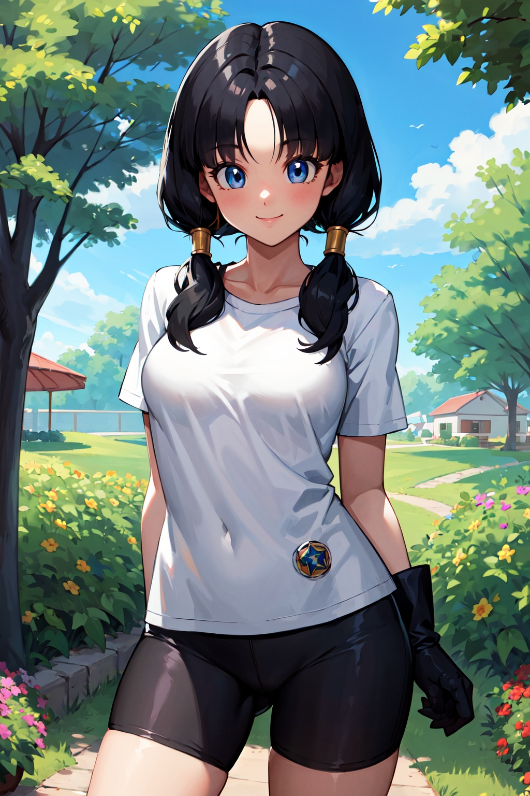
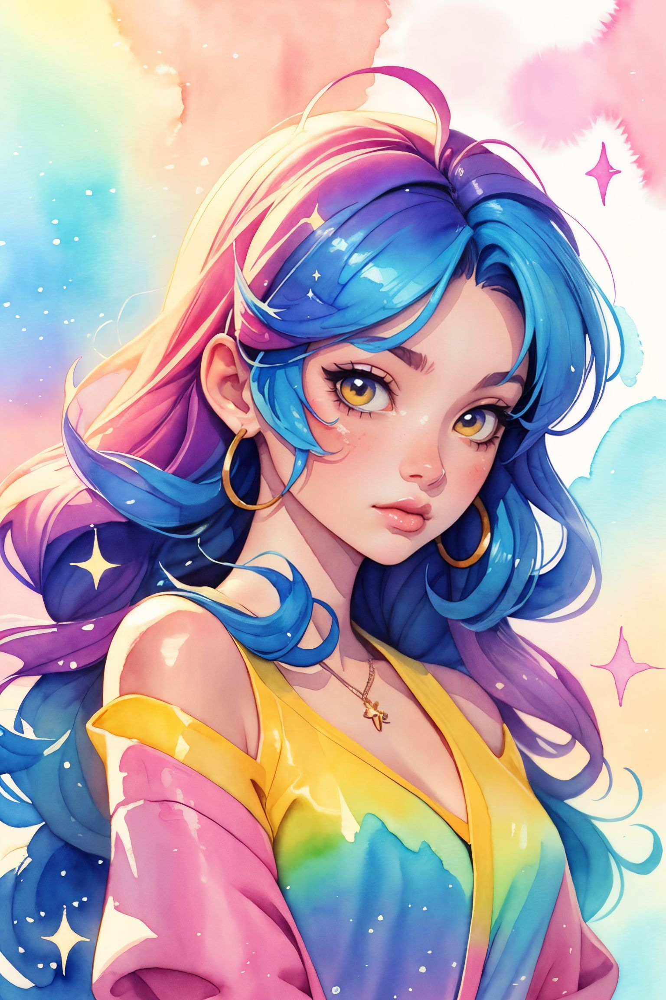
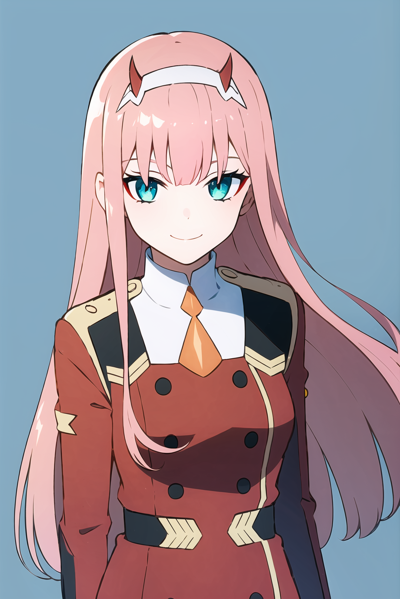

SD1.5 対応 おすすめLoRA一覧
対応モデルごとに分類されたLoRA一覧です。各カテゴリーを選択してください。全 985 ファイル。
loras (1)
Flux (168)
Illustrious (196)
Pony (104)
SD1.5 (264)
SDXL (23)
Unknown (124)
WanVideo (106)
SD1.5 (64 items on this page / Total 264 items)

SD1.5
全般
rei ayanami rebuild-lora-nochekaiser
「rei ayanami rebuild-lora-nochekaiser」に特化した追加学習モデルです。Stable DiffusionでのAI画像生成にLoRAを導入し、特定要素の再現性を劇的に向上。効率的かつ高品質なビジュアルを求める全てのAI絵師必見のモデルです。
Size: 37,876,728 bytes
SD1.5
全般
rem_v1
「rem_v1」に特化した追加学習モデルです。Stable DiffusionでのAI画像生成にLoRAを導入し、特定要素の再現性を劇的に向上。効率的かつ高品質なビジュアルを求める全てのAI絵師必見のモデルです。
Size: 75,610,358 bytes
SD1.5
全般
rias_gremory_v2
「rias_gremory_v2」に特化した追加学習モデルです。Stable DiffusionでのAI画像生成にLoRAを導入し、特定要素の再現性を劇的に向上。効率的かつ高品質なビジュアルを求める全てのAI絵師必見のモデルです。
Size: 75,612,882 bytes

SD1.5
全般
rin-08
「rin-08」に特化した追加学習モデルです。Stable DiffusionでのAI画像生成にLoRAを導入し、特定要素の再現性を劇的に向上。効率的かつ高品質なビジュアルを求める全てのAI絵師必見のモデルです。
Size: 37,895,575 bytes

SD1.5
全般
rin
「rin」に特化した追加学習モデルです。Stable DiffusionでのAI画像生成にLoRAを導入し、特定要素の再現性を劇的に向上。効率的かつ高品質なビジュアルを求める全てのAI絵師必見のモデルです。
Size: 151,110,177 bytes
SD1.5
全般
rosa_(pokemon)_v10
「rosa_(pokemon)_v10」に特化した追加学習モデルです。Stable DiffusionでのAI画像生成にLoRAを導入し、特定要素の再現性を劇的に向上。効率的かつ高品質なビジュアルを求める全てのAI絵師必見のモデルです。
Size: 37,872,380 bytes
SD1.5
全般
rosa_v2
「rosa_v2」に特化した追加学習モデルです。Stable DiffusionでのAI画像生成にLoRAを導入し、特定要素の再現性を劇的に向上。効率的かつ高品質なビジュアルを求める全てのAI絵師必見のモデルです。
Size: 18,986,408 bytes
SD1.5
全般
roxy_migurdia_offset
「roxy_migurdia_offset」に特化した追加学習モデルです。Stable DiffusionでのAI画像生成にLoRAを導入し、特定要素の再現性を劇的に向上。効率的かつ高品質なビジュアルを求める全てのAI絵師必見のモデルです。
Size: 151,108,831 bytes

SD1.5
全般
Ryuuou no Oshigoto!_all
「Ryuuou no Oshigoto!_all」に特化した追加学習モデルです。Stable DiffusionでのAI画像生成にLoRAを導入し、特定要素の再現性を劇的に向上。効率的かつ高品質なビジュアルを求める全てのAI絵師必見のモデルです。
Size: 75,613,229 bytes
SD1.5
全般
SagirinV5.1
「SagirinV5.1」に特化した追加学習モデルです。Stable DiffusionでのAI画像生成にLoRAを導入し、特定要素の再現性を劇的に向上。効率的かつ高品質なビジュアルを求める全てのAI絵師必見のモデルです。
Size: 10,727,656 bytes

SD1.5
全般
sagiri_v1
「sagiri_v1」に特化した追加学習モデルです。Stable DiffusionでのAI画像生成にLoRAを導入し、特定要素の再現性を劇的に向上。効率的かつ高品質なビジュアルを求める全てのAI絵師必見のモデルです。
Size: 37,863,210 bytes
SD1.5
全般
SailorMarsLORA-000026
「SailorMarsLORA-000026」に特化した追加学習モデルです。Stable DiffusionでのAI画像生成にLoRAを導入し、特定要素の再現性を劇的に向上。効率的かつ高品質なビジュアルを求める全てのAI絵師必見のモデルです。
Size: 37,868,511 bytes
SD1.5
全般
sailor_jupiter_v1
「sailor_jupiter_v1」に特化した追加学習モデルです。Stable DiffusionでのAI画像生成にLoRAを導入し、特定要素の再現性を劇的に向上。効率的かつ高品質なビジュアルを求める全てのAI絵師必見のモデルです。
Size: 37,869,504 bytes
SD1.5
全般
sailor_mars_v1
「sailor_mars_v1」に特化した追加学習モデルです。Stable DiffusionでのAI画像生成にLoRAを導入し、特定要素の再現性を劇的に向上。効率的かつ高品質なビジュアルを求める全てのAI絵師必見のモデルです。
Size: 37,870,748 bytes
SD1.5
全般
sailor_moon_v1
「sailor_moon_v1」に特化した追加学習モデルです。Stable DiffusionでのAI画像生成にLoRAを導入し、特定要素の再現性を劇的に向上。効率的かつ高品質なビジュアルを求める全てのAI絵師必見のモデルです。
Size: 37,861,388 bytes
SD1.5
全般
sailor_venus_v2
「sailor_venus_v2」に特化した追加学習モデルです。Stable DiffusionでのAI画像生成にLoRAを導入し、特定要素の再現性を劇的に向上。効率的かつ高品質なビジュアルを求める全てのAI絵師必見のモデルです。
Size: 37,870,342 bytes
SD1.5
全般
sakura
「sakura」に特化した追加学習モデルです。Stable DiffusionでのAI画像生成にLoRAを導入し、特定要素の再現性を劇的に向上。効率的かつ高品質なビジュアルを求める全てのAI絵師必見のモデルです。
Size: 151,110,784 bytes
SD1.5
全般
Sakura[Boruto]V2
「Sakura[Boruto]V2」に特化した追加学習モデルです。Stable DiffusionでのAI画像生成にLoRAを導入し、特定要素の再現性を劇的に向上。効率的かつ高品質なビジュアルを求める全てのAI絵師必見のモデルです。
Size: 75,633,475 bytes
SD1.5
全般
samus-nvwls-v1-final
「samus-nvwls-v1-final」に特化した追加学習モデルです。Stable DiffusionでのAI画像生成にLoRAを導入し、特定要素の再現性を劇的に向上。効率的かつ高品質なビジュアルを求める全てのAI絵師必見のモデルです。
Size: 37,871,030 bytes
SD1.5
全般
senchou_special-10
「senchou_special-10」に特化した追加学習モデルです。Stable DiffusionでのAI画像生成にLoRAを導入し、特定要素の再現性を劇的に向上。効率的かつ高品質なビジュアルを求める全てのAI絵師必見のモデルです。
Size: 19,023,060 bytes
SD1.5
全般
sento_isuzu_v1
「sento_isuzu_v1」に特化した追加学習モデルです。Stable DiffusionでのAI画像生成にLoRAを導入し、特定要素の再現性を劇的に向上。効率的かつ高品質なビジュアルを求める全てのAI絵師必見のモデルです。
Size: 37,861,388 bytes
SD1.5
全般
serena_(pokemon)_v2
「serena_(pokemon)_v2」に特化した追加学習モデルです。Stable DiffusionでのAI画像生成にLoRAを導入し、特定要素の再現性を劇的に向上。効率的かつ高品質なビジュアルを求める全てのAI絵師必見のモデルです。
Size: 37,861,388 bytes
SD1.5
全般
shigure_ui_v2
「shigure_ui_v2」に特化した追加学習モデルです。Stable DiffusionでのAI画像生成にLoRAを導入し、特定要素の再現性を劇的に向上。効率的かつ高品質なビジュアルを求める全てのAI絵師必見のモデルです。
Size: 75,623,011 bytes
SD1.5
全般
shinjou_akane_v2
「shinjou_akane_v2」に特化した追加学習モデルです。Stable DiffusionでのAI画像生成にLoRAを導入し、特定要素の再現性を劇的に向上。効率的かつ高品質なビジュアルを求める全てのAI絵師必見のモデルです。
Size: 37,861,388 bytes
SD1.5
全般
shokuhou_misaki_v2
「shokuhou_misaki_v2」に特化した追加学習モデルです。Stable DiffusionでのAI画像生成にLoRAを導入し、特定要素の再現性を劇的に向上。効率的かつ高品質なビジュアルを求める全てのAI絵師必見のモデルです。
Size: 37,861,388 bytes

SD1.5
全般
ShutenDoujiV11-000003
「ShutenDoujiV11-000003」に特化した追加学習モデルです。Stable DiffusionでのAI画像生成にLoRAを導入し、特定要素の再現性を劇的に向上。効率的かつ高品質なビジュアルを求める全てのAI絵師必見のモデルです。
Size: 75,645,477 bytes
SD1.5
全般
sign2-000013
「sign2-000013」に特化した追加学習モデルです。Stable DiffusionでのAI画像生成にLoRAを導入し、特定要素の再現性を劇的に向上。効率的かつ高品質なビジュアルを求める全てのAI絵師必見のモデルです。
Size: 151,113,985 bytes
SD1.5
全般
sister_cleaire_v2
「sister_cleaire_v2」に特化した追加学習モデルです。Stable DiffusionでのAI画像生成にLoRAを導入し、特定要素の再現性を劇的に向上。効率的かつ高品質なビジュアルを求める全てのAI絵師必見のモデルです。
Size: 37,861,784 bytes

SD1.5
全般
Squeezer2
「Squeezer2」に特化した追加学習モデルです。Stable DiffusionでのAI画像生成にLoRAを導入し、特定要素の再現性を劇的に向上。効率的かつ高品質なビジュアルを求める全てのAI絵師必見のモデルです。
Size: 151,108,838 bytes
SD1.5
全般
starlight
「starlight」に特化した追加学習モデルです。Stable DiffusionでのAI画像生成にLoRAを導入し、特定要素の再現性を劇的に向上。効率的かつ高品質なビジュアルを求める全てのAI絵師必見のモデルです。
Size: 75,610,144 bytes
SD1.5
全般
subaru_shuba-06
「subaru_shuba-06」に特化した追加学習モデルです。Stable DiffusionでのAI画像生成にLoRAを導入し、特定要素の再現性を劇的に向上。効率的かつ高品質なビジュアルを求める全てのAI絵師必見のモデルです。
Size: 19,053,442 bytes
SD1.5
全般
sunaookamiShirokoV1
「sunaookamiShirokoV1」に特化した追加学習モデルです。Stable DiffusionでのAI画像生成にLoRAを導入し、特定要素の再現性を劇的に向上。効率的かつ高品質なビジュアルを求める全てのAI絵師必見のモデルです。
Size: 151,111,229 bytes
SD1.5
全般
SurprisedBlankEyes_V1.7
「SurprisedBlankEyes_V1.7」に特化した追加学習モデルです。Stable DiffusionでのAI画像生成にLoRAを導入し、特定要素の再現性を劇的に向上。効率的かつ高品質なビジュアルを求める全てのAI絵師必見のモデルです。
Size: 6,714,952 bytes
SD1.5
全般
suzumiya_haruhi_v10
「suzumiya_haruhi_v10」に特化した追加学習モデルです。Stable DiffusionでのAI画像生成にLoRAを導入し、特定要素の再現性を劇的に向上。効率的かつ高品質なビジュアルを求める全てのAI絵師必見のモデルです。
Size: 151,116,553 bytes
SD1.5
全般
Sv5-10
「Sv5-10」に特化した追加学習モデルです。Stable DiffusionでのAI画像生成にLoRAを導入し、特定要素の再現性を劇的に向上。効率的かつ高品質なビジュアルを求める全てのAI絵師必見のモデルです。
Size: 37,875,486 bytes
![Swort Art Online FT - [Girlpack Final] - Version 1](thumbnails/Swort Art Online FT - [Girlpack Final] - Version 1.preview.jpg)
SD1.5
全般
Swort Art Online FT - [Girlpack Final] - Version 1
「Swort Art Online FT - [Girlpack Final] - Version 1」に特化した追加学習モデルです。Stable DiffusionでのAI画像生成にLoRAを導入し、特定要素の再現性を劇的に向上。効率的かつ高品質なビジュアルを求める全てのAI絵師必見のモデルです。
Size: 302,105,600 bytes
SD1.5
全般
TakashiroHirokoV2
「TakashiroHirokoV2」に特化した追加学習モデルです。Stable DiffusionでのAI画像生成にLoRAを導入し、特定要素の再現性を劇的に向上。効率的かつ高品質なビジュアルを求める全てのAI絵師必見のモデルです。
Size: 75,625,763 bytes
SD1.5
全般
tenjouin_asuka_v1
「tenjouin_asuka_v1」に特化した追加学習モデルです。Stable DiffusionでのAI画像生成にLoRAを導入し、特定要素の再現性を劇的に向上。効率的かつ高品質なビジュアルを求める全てのAI絵師必見のモデルです。
Size: 37,870,988 bytes

SD1.5
全般
testicle sucking remake4-000006
「testicle sucking remake4-000006」に特化した追加学習モデルです。Stable DiffusionでのAI画像生成にLoRAを導入し、特定要素の再現性を劇的に向上。効率的かつ高品質なビジュアルを求める全てのAI絵師必見のモデルです。
Size: 37,876,977 bytes
SD1.5
全般
TheMating
「TheMating」に特化した追加学習モデルです。Stable DiffusionでのAI画像生成にLoRAを導入し、特定要素の再現性を劇的に向上。効率的かつ高品質なビジュアルを求める全てのAI絵師必見のモデルです。
Size: 37,870,686 bytes
SD1.5
全般
thickline_fp16
「thickline_fp16」に特化した追加学習モデルです。Stable DiffusionでのAI画像生成にLoRAを導入し、特定要素の再現性を劇的に向上。効率的かつ高品質なビジュアルを求める全てのAI絵師必見のモデルです。
Size: 151,108,831 bytes
SD1.5
全般
tokino_sora_v20a
「tokino_sora_v20a」に特化した追加学習モデルです。Stable DiffusionでのAI画像生成にLoRAを導入し、特定要素の再現性を劇的に向上。効率的かつ高品質なビジュアルを求める全てのAI絵師必見のモデルです。
Size: 37,873,387 bytes
SD1.5
全般
tokisaki_kurumi_v1
「tokisaki_kurumi_v1」に特化した追加学習モデルです。Stable DiffusionでのAI画像生成にLoRAを導入し、特定要素の再現性を劇的に向上。効率的かつ高品質なビジュアルを求める全てのAI絵師必見のモデルです。
Size: 37,861,388 bytes
SD1.5
全般
TsunadeNSS
「TsunadeNSS」に特化した追加学習モデルです。Stable DiffusionでのAI画像生成にLoRAを導入し、特定要素の再現性を劇的に向上。効率的かつ高品質なビジュアルを求める全てのAI絵師必見のモデルです。
Size: 151,112,891 bytes
SD1.5
全般
u149-v4.0
「u149-v4.0」に特化した追加学習モデルです。Stable DiffusionでのAI画像生成にLoRAを導入し、特定要素の再現性を劇的に向上。効率的かつ高品質なビジュアルを求める全てのAI絵師必見のモデルです。
Size: 19,004,910 bytes
SD1.5
全般
uwu
「uwu」に特化した追加学習モデルです。Stable DiffusionでのAI画像生成にLoRAを導入し、特定要素の再現性を劇的に向上。効率的かつ高品質なビジュアルを求める全てのAI絵師必見のモデルです。
Size: 9,563,051 bytes
SD1.5
全般
uzaki_hana
「uzaki_hana」に特化した追加学習モデルです。Stable DiffusionでのAI画像生成にLoRAを導入し、特定要素の再現性を劇的に向上。効率的かつ高品質なビジュアルを求める全てのAI絵師必見のモデルです。
Size: 37,872,162 bytes

SD1.5
全般
vacuum fellatio1.1【vacuum fellatio】
「vacuum fellatio1.1【vacuum fellatio】」に特化した追加学習モデルです。Stable DiffusionでのAI画像生成にLoRAを導入し、特定要素の再現性を劇的に向上。効率的かつ高品質なビジュアルを求める全てのAI絵師必見のモデルです。
Size: 37,872,873 bytes

SD1.5
全般
videl_v10
「videl_v10」に特化した追加学習モデルです。Stable DiffusionでのAI画像生成にLoRAを導入し、特定要素の再現性を劇的に向上。効率的かつ高品質なビジュアルを求める全てのAI絵師必見のモデルです。
Size: 75,622,133 bytes
SD1.5
全般
WDR_realistic1.0
「WDR_realistic1.0」に特化した追加学習モデルです。Stable DiffusionでのAI画像生成にLoRAを導入し、特定要素の再現性を劇的に向上。効率的かつ高品質なビジュアルを求める全てのAI絵師必見のモデルです。
Size: 151,108,832 bytes

SD1.5
全般
wildcardxNijiAnime_wildcardxNijiV1
「wildcardxNijiAnime_wildcardxNijiV1」に特化した追加学習モデルです。Stable DiffusionでのAI画像生成にLoRAを導入し、特定要素の再現性を劇的に向上。効率的かつ高品質なビジュアルを求める全てのAI絵師必見のモデルです。
Size: 4,265,098,182 bytes
SD1.5
全般
xray2.5
「xray2.5」に特化した追加学習モデルです。Stable DiffusionでのAI画像生成にLoRAを導入し、特定要素の再現性を劇的に向上。効率的かつ高品質なビジュアルを求める全てのAI絵師必見のモデルです。
Size: 151,074,558 bytes
SD1.5
全般
yae_miko_offset_9_6
「yae_miko_offset_9_6」に特化した追加学習モデルです。Stable DiffusionでのAI画像生成にLoRAを導入し、特定要素の再現性を劇的に向上。効率的かつ高品質なビジュアルを求める全てのAI絵師必見のモデルです。
Size: 151,108,831 bytes
SD1.5
全般
yami-v1
「yami-v1」に特化した追加学習モデルです。Stable DiffusionでのAI画像生成にLoRAを導入し、特定要素の再現性を劇的に向上。効率的かつ高品質なビジュアルを求める全てのAI絵師必見のモデルです。
Size: 151,109,014 bytes
SD1.5
全般
yaoyorozu_momo_v1
「yaoyorozu_momo_v1」に特化した追加学習モデルです。Stable DiffusionでのAI画像生成にLoRAを導入し、特定要素の再現性を劇的に向上。効率的かつ高品質なビジュアルを求める全てのAI絵師必見のモデルです。
Size: 37,861,388 bytes
SD1.5
全般
Yelan_Hard
「Yelan_Hard」に特化した追加学習モデルです。Stable DiffusionでのAI画像生成にLoRAを導入し、特定要素の再現性を劇的に向上。効率的かつ高品質なビジュアルを求める全てのAI絵師必見のモデルです。
Size: 151,073,665 bytes
SD1.5
全般
yetsanRuskirt-000008
「yetsanRuskirt-000008」に特化した追加学習モデルです。Stable DiffusionでのAI画像生成にLoRAを導入し、特定要素の再現性を劇的に向上。効率的かつ高品質なビジュアルを求める全てのAI絵師必見のモデルです。
Size: 37,862,545 bytes
SD1.5
全般
yoimiya2-000008
「yoimiya2-000008」に特化した追加学習モデルです。Stable DiffusionでのAI画像生成にLoRAを導入し、特定要素の再現性を劇的に向上。効率的かつ高品質なビジュアルを求める全てのAI絵師必見のモデルです。
Size: 19,073,431 bytes

SD1.5
全般
yor briar s1-lora-nochekaiser
「yor briar s1-lora-nochekaiser」に特化した追加学習モデルです。Stable DiffusionでのAI画像生成にLoRAを導入し、特定要素の再現性を劇的に向上。効率的かつ高品質なビジュアルを求める全てのAI絵師必見のモデルです。
Size: 37,890,440 bytes
SD1.5
全般
yor_forger_v1
「yor_forger_v1」に特化した追加学習モデルです。Stable DiffusionでのAI画像生成にLoRAを導入し、特定要素の再現性を劇的に向上。効率的かつ高品質なビジュアルを求める全てのAI絵師必見のモデルです。
Size: 37,861,388 bytes
SD1.5
全般
yukiko
「yukiko」に特化した追加学習モデルです。Stable DiffusionでのAI画像生成にLoRAを導入し、特定要素の再現性を劇的に向上。効率的かつ高品質なビジュアルを求める全てのAI絵師必見のモデルです。
Size: 9,558,410 bytes

SD1.5
全般
zerotwo_offset
「zerotwo_offset」に特化した追加学習モデルです。Stable DiffusionでのAI画像生成にLoRAを導入し、特定要素の再現性を劇的に向上。効率的かつ高品質なビジュアルを求める全てのAI絵師必見のモデルです。
Size: 151,108,831 bytes
SD1.5
全般
派蒙
「派蒙」に特化した追加学習モデルです。Stable DiffusionでのAI画像生成にLoRAを導入し、特定要素の再現性を劇的に向上。効率的かつ高品質なビジュアルを求める全てのAI絵師必見のモデルです。
Size: 151,110,127 bytes
SD1.5
全般
珐露珊
「珐露珊」に特化した追加学習モデルです。Stable DiffusionでのAI画像生成にLoRAを導入し、特定要素の再現性を劇的に向上。効率的かつ高品質なビジュアルを求める全てのAI絵師必見のモデルです。
Size: 151,110,131 bytes